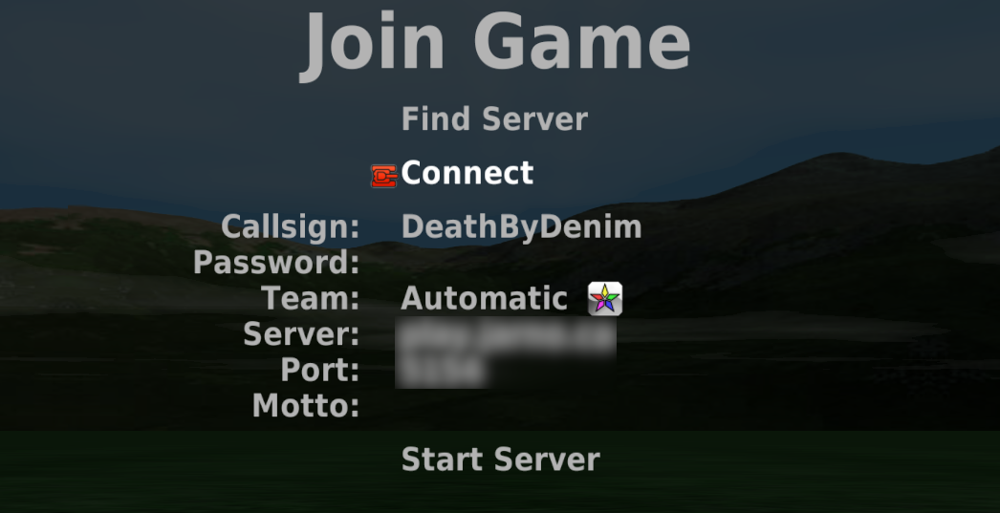

Use the arrow keys to nagivate to Join Game and press <Enter>.
Move down to Server and type {{ site.content.domain_name }} and keep the port number at 5154. You can also set your Callsign here. This is how other players will see your name. Then move up to Connect and press <Enter>.
You should now be connected.